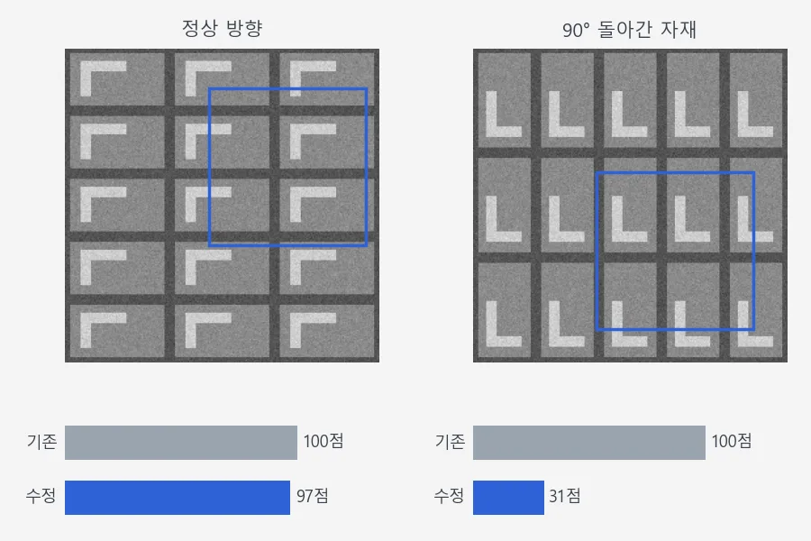

매칭 점수가 100점이 되는 이유
무엇이 이상했나
90° 돌아간 웨이퍼가 정상으로 판정됐습니다. 매칭 결과를 보니 정상 방향 자재와 돌아간 자재가 둘 다 100점이었습니다. 돌아간 자재는 기준 무늬와 모양이 다른데도 점수가 같았습니다.

원인: 점수를 그 영상 안에서만 비교했다
템플릿 매칭은 영상의 모든 위치에서 닮은 정도를 계산해 점수 맵을 만듭니다. 기존 코드는 이 맵을 맵 자신의 최솟값과 최댓값으로 0~100 으로 늘렸습니다. 그러면 가장 높은 위치는 맵이 어떻게 생겼든 언제나 100점이 됩니다.
이 점수는 "기준 무늬와 얼마나 닮았나"가 아니라 "이 영상 안에서 상대적으로 가장 닮은 곳이 어디인가"만 말합니다. 위치를 찾는 데는 문제가 없지만, 합격과 불합격을 가르는 데 쓰면 틀립니다.
# 기존: 맵 자신의 최소, 최대로 정규화. 봉우리는 늘 100
m = cv2.matchTemplate(img, tpl, cv2.TM_CCOEFF_NORMED)
score = (m.max() - m.min()) / (m.max() - m.min()) * 100 # = 100
# 수정: 매칭 방식이 낼 수 있는 값의 범위로 정규화
# 정규화 상관(TM_CCOEFF_NORMED)은 -1 ~ 1, 닮지 않음 이하는 0점
score = max(m.max(), 0) * 100고친 것
- 매칭 방식마다 이론상 최소, 최대 점수를 정하고 그 범위로 점수를 매기게 했습니다. 비정상 자재는 100점 고정이 아니라 10~50점대가 나옵니다.
- "영상 안에서 상대적으로 얼마나 뚜렷한가"가 필요할 때는 점수와 섞지 않고, 1등 봉우리와 2등 봉우리의 차이 같은 별도 지표로 봅니다.
- 패턴이 부족한 영상은 위상 상관(3~5배 빠름)과 여러 점수를 함께 보는 판정 전략을 따로 정리했습니다.
정리
정규화는 비교 기준을 바꿉니다. 절대 기준(이론 범위)과 상대 기준(영상 안 순위)을 구분하지 않으면, 위치는 맞게 찾으면서 판정은 틀리는 코드가 됩니다. 점수를 합격 기준에 쓰기 전에 "이 점수가 100점이 될 수 없는 경우가 있는가"를 먼저 확인합니다.
그림과 코드는 합성 데이터로 원리를 재현한 것이고, 설비 코드나 영상이 아닙니다.